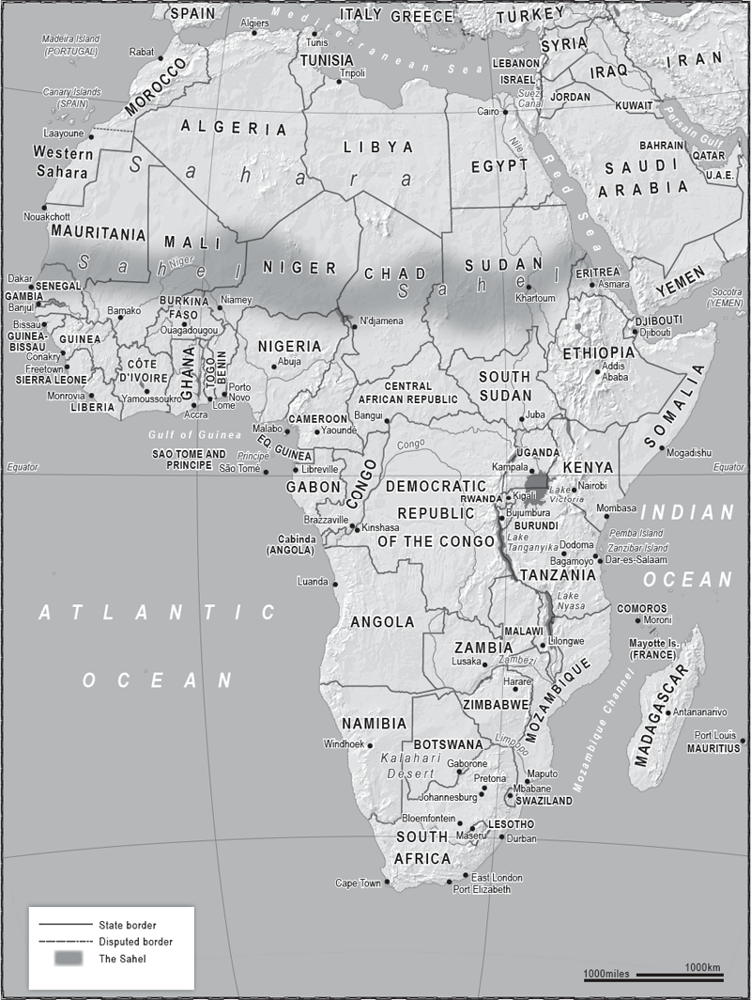

‘It always seems impossible until it is done.’
Nelson Mandela

AFRICA’S COASTLINE? GREAT BEACHES, REALLY, REALLY LOVELY beaches, but terrible natural harbours. Rivers? Amazing rivers, but most of them are rubbish for actually transporting anything, given that every few miles you go over a waterfall. These are just two in a long list of problems which help explain why Africa isn’t technologically or politically as successful as Western Europe or North America.
There are lots of places that are unsuccessful, but few have been as unsuccessful as Africa, and that despite having a head start as the place where Homo sapiens originated about 200,000 years ago. As that most lucid of writers, Jared Diamond, put it in a brilliant National Geographic article in 2005, ‘It’s the opposite of what one would expect from the runner first off the block.’ However, the first runners became separated from everyone else by the Sahara Desert and the Indian and Atlantic oceans. Almost the entire continent developed in isolation from the Eurasian land mass, where ideas and technology were exchanged from east to west, and west to east, but not north to south.
Africa, being a huge continent, has always consisted of different regions, climates and cultures, but what they all had in common was their isolation from each other and the outside world. That is less the case now, but the legacy remains.
The world’s idea of African geography is flawed. Few people realise just how big it is. This is because most of us use the standard Mercator world map. This, as do other maps, depicts a sphere on a flat surface and thus distorts shapes. Africa is far, far longer than usually portrayed, which explains what an achievement it was to round the Cape of Good Hope, and is a reminder of the importance of the Suez Canal to world trade. Making it around the Cape was a momentous achievement, but once it became unnecessary to do so, the sea journey from Western Europe to India was reduced by 6,000 miles.
If you look at a world map and mentally glue Alaska onto California, then turn the USA on its head, it appears as if it would roughly fit into Africa with a few gaps here and there. In fact Africa is three times bigger than the USA. Look again at the standard Mercator map and you see that Greenland appears to be the same size as Africa, and yet Africa is actually fourteen times the size of Greenland! You could fit the USA, Greenland, India, China, Spain, France, Germany and the UK into Africa and still have room for most of Eastern Europe. We know Africa is a massive land mass, but the maps rarely tell us how massive.
The geography of this immense continent can be explained in several ways, but the most basic is to think of Africa in terms of the top third and bottom two-thirds.
The top third begins on the Mediterranean coastlines of the North African Arabic-speaking countries. The coastal plains quickly become the Sahara, the world’s largest dry desert, which is almost as big as the USA. Directly below the Sahara is the Sahel region, a semi-arid, rock-strewn, sandy strip of land measuring more than 3,000 miles at its widest points and stretching from Gambia on the Atlantic coast through Niger, Chad and right across to Eritrea on the Red Sea. The word Sahel comes from the Arabic sahil, which means coast, and is how the people living in the region think of it – as the shoreline of the vast sand sea of the Sahara. It is another sort of shore, one where the influence of Islam diminishes. From the Sahel to the Mediterranean the vast majority of people are Muslims. South of it there is far more diversity in religion.
Indeed, south of the Sahel, in the bottom two-thirds of Africa, there is more diversity in most things. The land becomes more temperate and green vegetation appears, which becomes jungle as we approach Congo and the Central African Republic. Towards the east coast are the great lakes in Uganda and Tanzania, while across to the west more deserts appear in Angola and Namibia. By the time we reach the tip of South Africa the climate is again ‘Mediterranean’, even though we have travelled almost 5,000 miles from the northernmost point in Tunisia on the Mediterranean coast.
Given that Africa is where humans originated, we are all African. However, the rules of the race changed c.8000 BCE when some of us, who’d wandered off to places such as the Middle East and around the Mediterranean region, lost the wanderlust, settled down, began farming and eventually congregated in villages and towns.
But back south there were few plants willing to be domesticated, and even fewer animals. Much of the land consists of jungle, swamp, desert or steep-sided plateau, none of which lend themselves to the growing of wheat or rice, or sustaining herds of sheep. Africa’s rhinos, gazelles and giraffes stubbornly refused to be beasts of burden – or as Diamond puts it in a memorable passage, ‘History might have turned out differently if African armies, fed by barnyard-giraffe meat and backed by waves of cavalry mounted on huge rhinos, had swept into Europe to overrun its mutton-fed soldiers mounted on puny horses.’ But Africa’s head start in our mutual story did allow it more time to develop something else which to this day holds it back: a virulent set of diseases, such as malaria and yellow fever, brought on by the heat and now complicated by crowded living conditions and poor healthcare infrastructure. This is true of other regions – the subcontinent and South America, for example – but sub-Saharan Africa has been especially hard hit, for example by the HIV virus, and has a particular problem because of the prevalence of the mosquito and the Tsetse fly.
Most of the continent’s rivers also pose a problem, as they begin in high land and descend in abrupt drops which thwart navigation. For example, the mighty Zambezi may be Africa’s fourth-longest river, running for 1,600 miles, and may be a stunning tourist attraction with its white-water rapids and the Victoria Falls, but as a trade route it is of little use. It flows through six countries, dropping from 4,900 feet to sea level when it reaches the Indian Ocean in Mozambique. Parts of it are navigable by shallow boats, but these parts do not interconnect, thus limiting the transportation of cargo.
Unlike in Europe, which has the Danube and the Rhine, this drawback has hindered contact and trade between regions – which in turn affected economic development, and hindered the formation of large trading regions. The continent’s great rivers, the Niger, the Congo, the Zambezi, the Nile and others, don’t connect and this disconnection has a human factor. Whereas huge areas of Russia, China and the USA speak a unifying language which helps trade, in Africa thousands of languages exist and no one culture emerged to dominate areas of similar size. Europe, on the other hand, was small enough to have a ‘lingua franca’ through which to communicate, and a landscape that encouraged interaction.
Even had technologically productive nation states arisen, much of the continent would still have struggled to connect to the rest of the world because the bulk of the land mass is framed by the Indian and Atlantic oceans and the Sahara Desert. The exchange of ideas and technology barely touched sub-Saharan Africa for thousands of years. Despite this, several African empires and city states did arise after about the sixth century CE: for example the Mali Empire (thirteenth–sixteenth century), and the city state of Great Zimbabwe (eleventh–fifteenth century), the latter in land between the Zambezi and Limpopo rivers. However, these and others were isolated to relatively small regional blocs, and although the myriad cultures which did emerge across the continent may have been politically sophisticated, the physical landscape remained a barrier to technological development: by the time the outside world arrived in force, most had yet to develop writing, paper, gunpowder or the wheel.
Traders from the Middle East and the Mediterranean had been doing business in the Sahara, after the introduction of camels, from about 2,000 years ago, notably trading the vast resources of salt there; but it wasn’t until the Arab conquests of the seventh century CE that the scene was set for a push southward. By the ninth century they had crossed the Sahara, and by the eleventh were firmly established as far south as modern-day Nigeria. The Arabs were also coming down the east coast and establishing themselves in places such as Zanzibar and Dar es Salaam in what is now Tanzania.
When the Europeans finally made it down the west coast in the fifteenth century they found few natural harbours for their ships. Unlike Europe or North America, where the jagged coastlines give rise to deep natural harbours, much of the African coastline is smooth. And once they did make land they struggled to penetrate any further inland than about 100 miles due to the difficulty of navigating the rivers, as well as the challenges of the climate and disease.
Both the Arabs and then the Europeans brought with them new technology which they mostly kept to themselves, and took away whatever they found of value, which was mainly natural resources and people.
Slavery existed long before the outside world returned to where it had originated. Traders in the Sahel region used thousands of slaves to transport vast quantities of the region’s then most valuable commodity, salt, but the Arabs began the practice of subcontracting African slave-taking to willing tribal leaders who would deliver them to the coast. By the time of the peak of the Ottoman Empire in the fifteenth and sixteenth centuries hundreds of thousands of Africans (mostly from the Sudan region) had been taken to Istanbul, Cairo, Damascus and across the Arabian world. The Europeans followed suit, outdoing the Arabs and Turks in their appetite for, and mistreatment of, the people brought to the slave ships anchored off the west coast.
Back in the great capital cities of London, Paris, Brussels and Lisbon, the Europeans then took maps of the contours of Africa’s geography and drew lines on them – or, to take a more aggressive approach, lies. In between these lines they wrote words such as Middle Congo or Upper Volta and called them countries. These lines were more about how far which power’s explorers, military forces and businessmen had advanced on the map than what the people living between the lines felt themselves to be, or how they wanted to organise themselves. Many Africans are now partially the prisoners of the political geography the Europeans made, and of the natural barriers to progression with which nature endowed them. From this they are making a modern home and, in some cases, vibrant, connected economies.
There are now fifty-six countries in Africa. Since the ‘winds of change’ of the independence movement blew through the mid twentieth century, some of the words between the lines have been altered – for example, Rhodesia is now Zimbabwe – but the borders are, surprisingly, mostly intact. However, many encompass the same divisions they did when first drawn, and those formal divisions are some of the many legacies colonialism bequeathed the continent.
The ethnic conflicts within Sudan, Somalia, Kenya, Angola, the Democratic Republic of the Congo, Nigeria, Mali and elsewhere are evidence that the European idea of geography did not fit the reality of Africa’s demographics. There may have always been conflict: the Zulus and Xhosas had their differences long before they had ever set eyes on a European. But colonialism forced those differences to be resolved within an artificial structure – the European concept of a nation state. The modern civil wars are now partially because the colonialists told different nations that they were one nation in one state, and then after the colonialists were chased out a dominant people emerged within the state who wanted to rule it all, thus ensuring violence.
Take, for example, Libya, an artificial construct only a few decades old which at the first test fell apart into its previous incarnation as three distinct geographical regions. In the west it was, in Greek times, Tripolitania (from the Greek tri polis, three cities, which eventually merged and became Tripoli). The area to the east, centred on the city of Benghazi but stretching down to the Chad border, was known in both Greek and Roman times as Cyrenaica. Below these two, in what is now the far south-west of the country, is the region of Fezzan.
Tripolitania was always orientated north and north-west, trading with its southern European neighbours. Cyrenaica always looked east to Egypt and the Arab lands. Even the sea current off the coast of the Benghazi region takes boats naturally eastwards. Fezzan was traditionally a land of nomads who had little in common with the two coastal communities.
This is how the Greeks, Romans and Turks all ruled the area – it is how the people had thought of themselves for centuries. The mere decades-old European idea of Libya will struggle to survive and already one of the many Islamist groups in the east has declared an ‘emirate of Cyrenaica’. While this may not come to pass, it is an example of how the concept of the region originated merely in lines drawn on maps by foreigners.
However, one of the biggest failures of European line-drawing lies in the centre of the continent, the giant black hole known as the Democratic Republic of the Congo – the DRC. Here is the land in which Joseph Conrad set his novel Heart of Darkness, and it remains a place shrouded in the darkness of war. It is a prime example of how the imposition of artificial borders can lead to a weak and divided state, ravaged by internal conflict, and whose mineral wealth condemns it to being exploited by outsiders.
The DRC is an illustration of why the catch-all term ‘developing world’ is far too broad-brush a way to describe countries which are not part of the modern industrialised world. The DRC is not developing, nor does it show any signs of so doing. The DRC should never have been put together; it has fallen apart and is the most under-reported war zone in the world, despite the fact that six million people have died there during wars which have been fought since the late 1990s.
The DRC is neither democratic, nor a republic. It is the second-largest country in Africa with a population of about 75 million, although due to the situation there it is difficult to find accurate figures. It is bigger than Germany, France and Spain combined and contains the Congo Rainforest, second only to the Amazon as the largest in the world.
The people are divided into more than 200 ethnic groups, of which the biggest are the Bantu. There are several hundred languages, but the widespread use of French bridges that gap to a degree. The French comes from the DRC’s years as a Belgian colony (1908–60) and before that when King Leopold of the Belgians used it as his personal property from which to steal its natural resources to line his pockets. Belgian colonial rule made the British and French versions look positively benign and was ruthlessly brutal from start to finish, with few attempts to build any sort of infrastructure to help the inhabitants. When the Belgians went in 1960 they left behind little chance of the country holding together.
The civil wars began immediately and were later intensified by a blood-soaked walk-on role in the global Cold War. The government in the capital, Kinshasa, backed the rebel side in Angola’s war, thus bringing itself to the attention of the USA, which was also supporting the rebel movement against the Soviet-backed Angolan government. Each side poured in hundreds of millions of dollars’ worth of arms.
When the Cold War ended both great powers had less interest in what by then was called Zaire and the country staggered on, kept afloat by its natural resources. The Rift Valley curves into the DRC in its south and east and it has exposed huge quantities of cobalt, copper, diamonds, gold, silver, zinc, coal, manganese and other minerals, especially in Katanga Province.
In King Leopold’s days the world wanted the region’s rubber for the expanding motor car industry; now China buys more than 50 per cent of the DRC’s exports, but still the population lives in poverty. In 2014 the United Nations Human Development Index placed the DRC 186th out of 187 countries it measured. The bottom eighteen countries in that list are all in Africa.
Because it is so resource-rich and so large, everyone wants a bite out of the DRC, which, as it lacks a substantive central authority, cannot really bite back.
The region is also bordered by nine countries. They have all played a role in the DRC’s agony, which is one reason why the Congo wars are also known as ‘Africa’s world war’. To the south is Angola, to the north the Republic of the Congo and the Central Africa Republic, to the east Uganda, Rwanda, Burundi, Tanzania and Zambia. The roots of the wars go back decades, but the worst of times was triggered by the disaster that hit Rwanda in 1994 and swept westward in its aftermath.
After the genocide in Rwanda the Tutsi survivors and moderate Hutus formed a Tutsi-led government. The killing machines of the Hutu militia, the Interahamwe, fled into eastern DRC but conducted border raids. They also joined with sections of the DRC army to kill the DRC’s Tutsis, who live near the border region. In came the Rwandan and Ugandan armies, backed by Burundi and Eritrea. Allied with opposition militias, they attacked the Interahamwe and overthrew the DRC government. They also went on to control much of the country’s natural wealth, with Rwanda in particular shipping back tons of coltan, which is used in the making of mobile phones and computer chips. However, what had been the government forces did not give up and – with the involvement of Angola, Namibia and Zimbabwe – continued the fight. The country became a vast battleground, with more than twenty factions involved in the fighting.
The wars have killed, at a low estimate, tens of thousands of people, and have resulted in the deaths of another six million due to disease and malnutrition. The UN estimates that almost 50 per cent of the victims have been children aged under five.
In recent years the fighting has died down, but the DRC is home to the world’s most deadly conflict since the Second World War and still requires the UN’s largest peacekeeping mission to prevent full-scale war from breaking out again. Now the job is not to put Humpty Dumpty together again, because the DRC was never whole. It is simply to keep the pieces apart until a way can be found to join them sensibly and peacefully. The European colonialist created an egg without a chicken, a logical absurdity repeated across the continent and one that continues to haunt it.
Africa has been equally cursed and blessed by its resources – blessed in so far as it has natural riches in abundance, but cursed because outsiders have long plundered them. In more recent times the nation states have been able to claim a share of these riches, and foreign countries now invest rather than steal, but still the people are rarely the beneficiaries.
In addition to its natural mineral wealth, Africa is also blessed with many great rivers – although most of its rivers do not encourage trade, they are good for hydroelectricity. However, this too is a source of potential conflict.
The Nile, the longest river in the world (4,100 miles), affects ten countries considered to be in the proximity of its basin – Burundi, the DRC, Eritrea, Ethiopia, Kenya, Rwanda, Sudan, Tanzania, Uganda and Egypt. As long ago as the fifth century BCE the historian Herodotus said: ‘Egypt is the Nile, and the Nile is Egypt.’ It is still true, and so a threat to the supply to Egypt’s 700-mile-long, fully navigable section of the Nile is for Cairo a concern – one over which it would be prepared to go to war. Without the Nile, there would be no one there. It may be a huge country, but the vast majority of its 84 million population lives within a few miles of the Nile. Measured by the area in which people dwell, Egypt is one of the most densely populated countries in the world.
Egypt was, arguably, a nation state when most Europeans were living in mud huts, but it was only ever a regional power. It is protected by deserts on three sides and might have become a great power in the Mediterranean region but for one problem. There are hardly any trees in Egypt, and for most of history, if you didn’t have trees you couldn’t build a great navy with which to project your power. There has always been an Egyptian navy – it used to import cedar from Lebanon to build ships at huge expense – but it has never been a Blue Water navy.
Modern Egypt now has the most powerful armed forces of all the Arab states, thanks to American military aid; but it remains contained by deserts, the sea and its peace treaty with Israel. It will remain in the news as it struggles to cope with feeding 84 million people a day while battling an Islamist insurgency, especially in the Sinai, and guarding the Suez Canal, through which passes 8 per cent of the world’s entire trade every day. Some 2.5 per cent of the world’s oil passes this way daily; closing the canal would add about fifteen days’ transit time to Europe and ten to the USA, with concurrent costs.
Despite having fought five wars with Israel, the country Egypt is most likely to come into conflict with next is Ethiopia, and the issue is the Nile. Two of the continent’s oldest countries, with the largest armies, may come to blows over the region’s major source of water.
The Blue Nile, which begins in Ethiopia, and the White Nile meet in the Sudanese capital, Khartoum, before flowing through the Nubian Desert and into Egypt. By this point the majority of the water is from the Blue Nile.
Ethiopia is sometimes called ‘Africa’s water tower’ due to its high elevation and has more than twenty dams fed by the rainfall in its highlands. In 2011 Addis Ababa announced a joint project with China to build a massive hydroelectric project on the Blue Nile near the Sudanese border called the Grand Renaissance Dam, scheduled to be finished by 2020. The dam will be used to create electricity, and the flow to Egypt should continue; but in theory the dam could also hold a year’s worth of water, and completion of the project would give Ethiopia the potential to hold the water for its own use, thus drastically reducing the flow into Egypt.
As things stand Egypt has a more powerful military, but that is slowly changing, and Ethiopia, a country of 96 million people, is a growing power. Cairo knows this, and also that once the dam is built, destroying it would create a flooding catastrophe in both Ethiopia and Sudan. However, at the moment it does not have a casus belli to strike before completion, and despite the fact that a Cabinet minister was recently caught on microphone recommending bombing, the next few years are more likely to see intense negotiations, with Egypt wanting cast-iron guarantees that the flow will be never be stopped. Water wars are considered to be among the coming conflicts this century and this is one to watch.
Another hotly contested liquid is oil.
Nigeria is sub-Saharan Africa’s largest producer of oil, and all of this high-quality oil is in the south. Nigerians in the north complain that the profits from that oil are not shared equitably across the country’s regions. This in turn exacerbates the ethnic and religious tensions between the peoples from the Nigerian delta and those in the north-east.
By size, population and natural resources, Nigeria is West Africa’s most powerful country. It is the continent’s most populous nation, with 177 million people, which with its size and natural resources makes it the leading regional power. It is formed from the territories of several ancient kingdoms which the British brought together as an administrative area. In 1898 they drew up a ‘British Protectorate on the River Niger’ which in turn became Nigeria.
It may now be an independent regional powerhouse, but its people and resources have been mismanaged for decades. In colonial times the British preferred to stay in the south-western area along the coast. Their ‘civilising’ mission rarely extended to the highlands of the centre, nor up to the Muslim populations in the north, and this half of the country remains less developed than the south. Much of the money made from oil is spent paying off the movers and shakers in Nigeria’s complex tribal system. The onshore oil industry in the delta is also being threatened by the Movement for the Emancipation of the Niger Delta, a fancy name for a group which does operate in a region devastated by the oil industry, but which uses it as a cover for terrorism and extortion. The kidnapping of foreign oil workers is making it a less and less attractive place to do business. The offshore oilfields are mostly free of this activity and that is where the investment is heading.
The Islamist group Boko Haram, which wants to establish a caliphate in the Muslim areas, has used the sense of injustice engendered by underdevelopment to gain ground in the north. Boko Haram fighters are usually ethnic Kanuris from the north-east. They rarely operate outside of their home territory, not even venturing west to the Hausa region, and certainly not way down south to the coastal areas. This means that when the Nigerian military come looking for them Boko Haram are operating on home ground. Much of the local population will not co-operate with the military, either for fear of reprisal or due to a shared resentment of the south.
The territory taken by Boko Haram does not yet endanger the existence of the state of Nigeria. The group does not even pose a threat to the capital Abuja, despite it being situated halfway up the country; but they do pose a daily threat to people in the north and they damage Nigeria’s reputation abroad as a place to do business.
Most of the villages they have captured are on the Mandara mountain range, which backs onto Cameroon. This means the national army is operating a long way from its bases, and cannot surround a Boko Haram force. Cameroon’s government does not welcome Boko Haram, but the countryside gives the fighters space to retreat to if required. The situation will not burn itself out for several years, during which time Boko Haram will try to form alliances with the jihadists up north in the Sahel region.
The Americans and French have tracked the problem for several years and now operate surveillance drones in response to the growing threat of violence projecting out of the Sahel/Sahara region and connecting with northern Nigeria. The Americans use several bases, including the one in Djibouti which is part of the US Africa Command, set up in 2007, and the French have access to concrete in various countries in what they call ‘Francophone Africa’.
The dangers of the threat spreading across several countries has been a wake-up call. Nigeria, Cameroon and Chad are all now involved militarily and co-ordinating with the Americans and French.
Further south, down the Atlantic coast, is sub-Saharan Africa’s second-largest oil producer – Angola. The former Portuguese colony is one of the African nation states with natural geographical borders. It is framed by the Atlantic Ocean to the west, by jungle to the north and desert to the south, while the eastern regions are sparsely populated rugged land which acts as a buffer zone with the DRC and Zambia.
The majority of the 22 million-strong population live in the western half, which is well watered and can sustain agriculture; and off the coast in the west lie most of Angola’s oilfields. The rigs out in the Atlantic are mostly owned by American companies, but over half of the output ends up in China. This makes Angola (dependent on the ebb and flow of sales) second only to Saudi Arabia as the biggest supplier of crude oil to the Middle Kingdom.
Angola is another country familiar with conflict. Its war for independence ended in 1975 when the Portuguese gave up, but it instantly morphed into a civil war between tribes disguised as a civil war over ideology. Russia and Cuba supported the ‘socialists’, the USA and apartheid South Africa backed the ‘rebels’. Most of the socialists of the MPLA (Popular Movement for the Liberation of Angola) were from the Mbundu tribe, while the opposition rebel fighters were mostly from two other main tribes, the Bakongo and the Ovimbundu. Their political disguise was as the FNLA (National Liberation Front of Angola) and UNITA (National Union for the Total Independence of Angola). Many of the civil wars of the 1960s and 1970s followed this template: if Russia backed a particular side, that side would suddenly remember that it had socialist principles while its opponents would become anti-Communist.
The Mbundu had the geographical but not the numerical advantage. They held the capital, Luanda, had access to the oilfields and the main river, the Kwanza, and were backed by countries which could supply them with Russian arms and Cuban soldiers. They prevailed in 2002 and their top echelons immediately undermined their own somewhat questionable socialist credentials by joining the long list of colonial and African leaders who enriched themselves at the expense of the people.
This sorry history of domestic and foreign exploitation continues in the twenty-first century.
As we’ve seen, the Chinese are everywhere, they mean business and they are now every bit as involved across the continent as the Europeans and Americans. About a third of China’s oil imports come from Africa, which – along with the precious metals to be found in many African countries – means they have arrived, and will stay. European and American oil companies and big multinationals are still far more heavily involved in Africa, but China is quickly catching up. For example, in Liberia it is seeking iron ore, in the DRC and Zambia it’s mining copper and, also in the DRC, cobalt. It has already helped to develop the Kenyan port of Mombasa and is now embarking on more huge projects just as Kenya’s oil assets are beginning to become commercially viable.
China’s state-owned China Road and Bridge Corporation is building a $14 billion rail project to connect Mombasa to the capital city of Nairobi. Analysts say the time taken for goods to travel between the two cities will be reduced from thirty-six hours to eight hours, with a corresponding cut of 60 per cent in transport costs. There are even plans to link Nairobi up to South Sudan, and across to Uganda and Rwanda. Kenya intends, with Chinese help, to be the economic powerhouse of the eastern seaboard.
Over the southern border Tanzania is trying a rival bid to become East Africa’s leader and has concluded billions of dollars’ worth of deals with the Chinese on infrastructure projects. It has also signed a joint agreement with China and an Omani construction company to overhaul and extend the port of Bagamoyo, as the main port in Dar es Salaam is severely congested. It is planned that Bagamoyo will be able to handle 20 million cargo containers a year, which will make it the biggest port in Africa. Tanzania also has good transport links in the ‘Southern Agricultural Growth Corridor of Tanzania’ and is connecting down into the fifteen-nation Southern African Development Community. This in turn links into the North–South Corridor, which connects the port of Durban to the copper regions of DRC and Zambia with spurs linking the port of Dar es Salaam to Durban and Malawi.
Despite this, Tanzania looks as if it will be the second-tier power along the east coast. Kenya’s economy is the powerhouse in the five-nation East African Community, accounting for about 40 per cent of the region’s GDP. It may have less arable land than Tanzania, but it uses what it has much more efficiently. Its industrial system is also more efficient, as is its system of getting goods to market – both domestic and international. If it can maintain political stability it looks destined to remain the dominant regional power in the near to medium term.
China’s presence also stretches into Niger, with the Chinese National Petroleum Corporation investing in the small oilfield in the Ténéré fields in the centre of the country. And Chinese investment in Angola over the past decade exceeds $8 billion and is growing every year. The Chinese Railway Engineering Corporation (CREC) has already spent almost $2 billion modernising the Benguela railway line which links the DRC to the Angolan port of Lobito on the Atlantic coast 800 miles away. This way come the cobalt, copper and manganese with which Katanga Province in the DRC is cursed and blessed.
In Luanda CREC is constructing a new international airport, and around the capital huge apartment blocks built to the Chinese model have sprung up to house some of the estimated 150,000–200,000 Chinese workers now in the country. Thousands of these workers are also trained in military skills and could provide a ready-made militia if China so required.
What Beijing wants in Angola is what it wants everywhere: the materials with which to make its products, and political stability to ensure the flow of those materials and products. So if President José Eduardo dos Santos, who has been in charge for thirty-six years, decided to pay Mariah Carey $1 million to sing at his birthday party in 2013, that’s his affair. And if the Mbundu, to which dos Santos belongs, continue to dominate, that is theirs.
Chinese involvement is an attractive proposition for many African governments. Beijing and the big Chinese companies don’t ask difficult questions about human rights, they don’t demand economic reform or even suggest that certain African leaders stop stealing their countries’ wealth as the IMF or World Bank might. For example, China is Sudan’s biggest trading partner, which goes some way to explaining why China consistently protects Sudan at the UN Security Council and continued to back its President Omar al-Bashir even when there was an arrest warrant out for him issued by the International Criminal Court. Western criticism of this gets short shrift in Beijing, however; it is regarded as simply another power play aimed at stopping China doing business, and hypocrisy given the West’s history in Africa.
All the Chinese want is the oil, the minerals, the precious metals and the markets. This is an equitable government-to-government relationship, but we will see increasing tension between local populations and the Chinese workforces often brought in to assist the big projects. This in turn may draw Beijing more into the local politics, and require it to have some sort of minor military presence in various countries.
South Africa is China’s largest trading partner in Africa. The two countries have a long political and economic history and are well placed to work together. Hundreds of Chinese companies, both state owned and private, now operate in Durban, Johannesburg, Pretoria, Cape Town and Port Elizabeth.
South Africa’s economy is ranked second-biggest on the continent behind Nigeria. It is certainly the powerhouse in the south in terms of its economy (three times the size of Angola’s), military and population (53 million). South Africa is more developed than many African nations, thanks to its location at the very southern tip of the continent with access to two oceans, its natural wealth of gold, silver and coal and a climate and land that allow for large-scale food production.
Because it is located so far south, and the coastal plain quickly rises into high land, South Africa is one of the very few African countries that do not suffer from the curse of malaria, as mosquitoes find it difficult to breed there. This allowed the European colonialists to push into its interior much further and faster than in the malaria-riddled tropics, settle, and begin small-scale industrial activity which grew into what is now southern Africa’s biggest economy.
For most of Southern Africa, doing business with the outside world means doing business with Pretoria, Bloemfontein and Cape Town.
South Africa has used its natural wealth and location to tie its neighbours into its transport system, meaning there is a two-way rail and road conveyer belt stretching from the ports in East London, Cape Town, Port Elizabeth and Durban stretching north through Zimbabwe, Botswana, Zambia, Malawi and Tanzania, reaching even into Katanga Province of the DRC and eastward into Mozambique. The new Chinese-built railway from Katanga to the Angolan coast has been laid to challenge this dominance and might take some traffic from the DRC, but South Africa looks destined to maintain its advantages.
During the apartheid years the ANC (African National Congress) backed Angola’s MPLA in its fight against Portuguese colonisation. However, the passion of a shared struggle is turning into a cooler relationship now that each party controls its respective country and competes at a regional level. Angola has a long way to go to catch up with South Africa. This will not be a military confrontation: South Africa’s dominance is near-total. It has large, well-equipped armed forces comprising about 100,000 personnel, dozens of fighter jets and attack helicopters, as well as several modern submarines and frigates.
In the days of the British Empire, controlling South Africa meant controlling the Cape of Good Hope and thus the sea lanes between the Atlantic and Indian oceans. Modern navies can venture much further out from the southern African coastline if they wish to pass by, but the Cape is still a commanding piece of real estate on the world map and South Africa is a commanding presence in the whole of the bottom third of the continent.
There is a new scramble for Africa in this century, but this time it is two-pronged. There are the well-publicised outside interests, and meddling, in the competition for resources, but there is also the ‘scramble within’, and South Africa intends to scramble fastest and furthest.
It dominates the fifteen-nation Southern African Development Community (SADC) and has managed to gain a permanent place at the International Conference on the Great Lakes Region, of which it is not even a member. The SADC is rivalled by the East African Community (EAC) comprising Burundi, Kenya, Rwanda, Uganda and Tanzania. The latter is also a member of the SADC and the other EAC members take a dim view of its flirtation with South Africa. For its part South Africa appears to view Tanzania as its vehicle for gaining greater influence in the Great Lakes region and beyond.
The South African National Defence Force has a brigade in the DRC officially under the command of the UN, but it was sent there by its political masters to ensure that South Africa is not left out from the spoils of war in that mineral-rich country. This has brought it into competition with Uganda, Burundi and Rwanda, which have their own ideas about who should be in charge in the DRC.
The Africa of the past was given no choice – its geography shaped it – and then the Europeans engineered most of today’s borders. Now, with its booming populations and developing mega-cities, it has no choice but to embrace the modern globalised world to which it is so connected. In this, despite all the problems we have seen, it is making huge strides.
The same rivers that hampered trade are now harnessed for hydroelectric power. From the earth that struggled to sustain large-scale food production come minerals and oil, making some countries rich even if little of the wealth reaches the people. Nevertheless, in most, but not all, countries poverty has fallen as healthcare and education levels have risen. Many countries are English-speaking, which in an English-language-dominated global economy is an advantage, and the continent has seen economic growth over most of the past decade.
On the downside, economic growth in many countries is dependent on global prices for minerals and energy. Countries whose national budgets are predicated on receiving $100 dollars per barrel of oil, for example, have little to fall back on when prices drop to $80 or $60. Manufacturing output levels are close to where they were in the 1970s. Corruption remains rampant across the continent, and as well as the few ‘hot’ conflicts (Somalia, Nigeria, Sudan, for example) there are several more that are merely frozen.
Nevertheless, every year more roads and railways are being built connecting this incredibly diverse space. The vast distances of the oceans and deserts separating Africa from everywhere have been overcome by air travel, and industrial muscle has created harbours in places nature had not intended them to be.
In every decade since the 1960s optimists have written about how Africa is on the brink of prevailing over the hand history and nature have dealt it. Perhaps this time it is true. It needs to be. Sub-Saharan Africa currently holds 1.1 billion people, by some estimates – by 2050 that may have more than doubled to 2.4 billion.